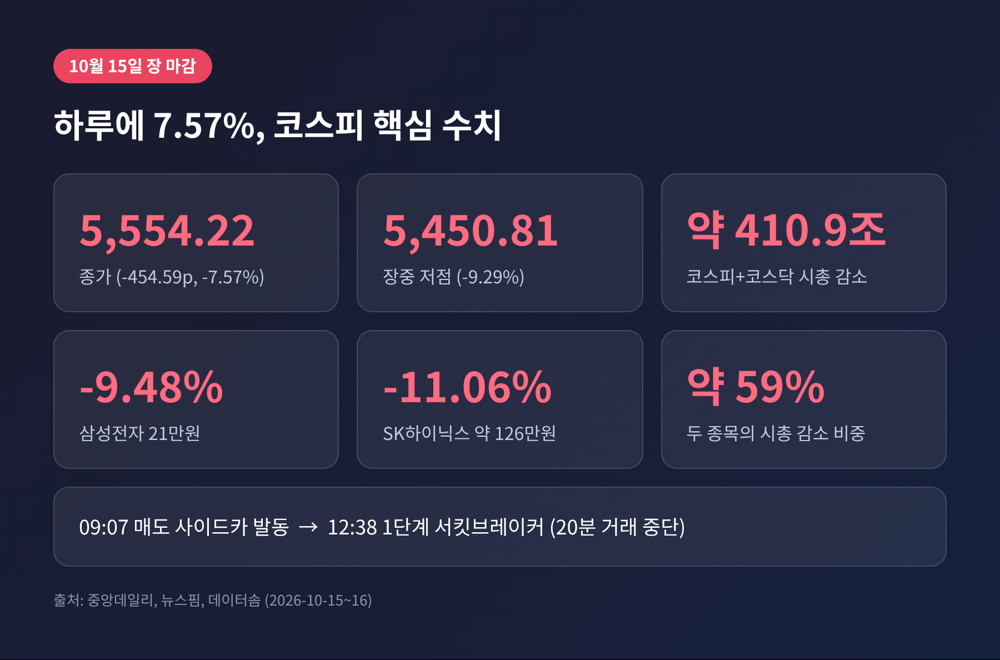
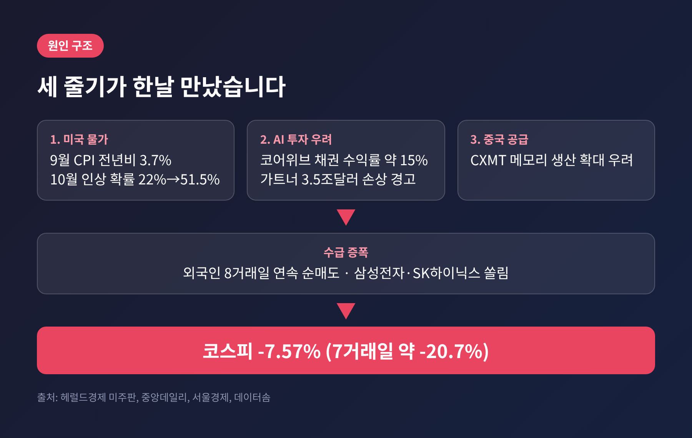
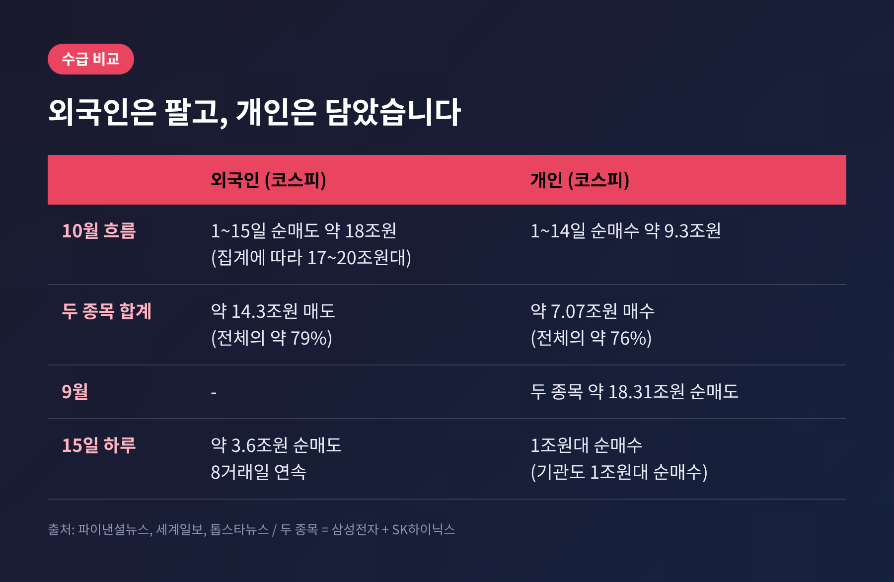
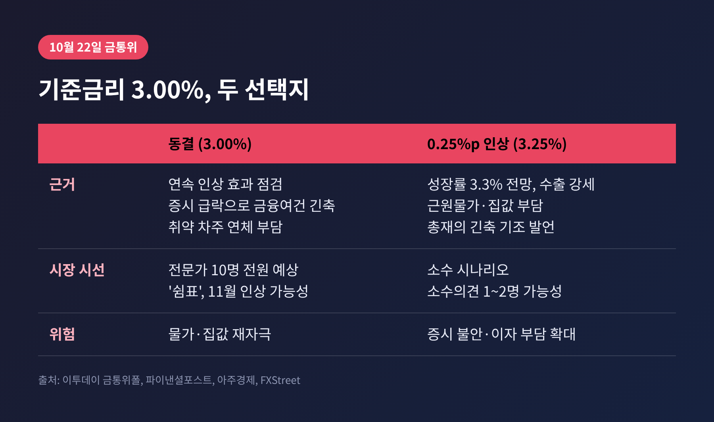
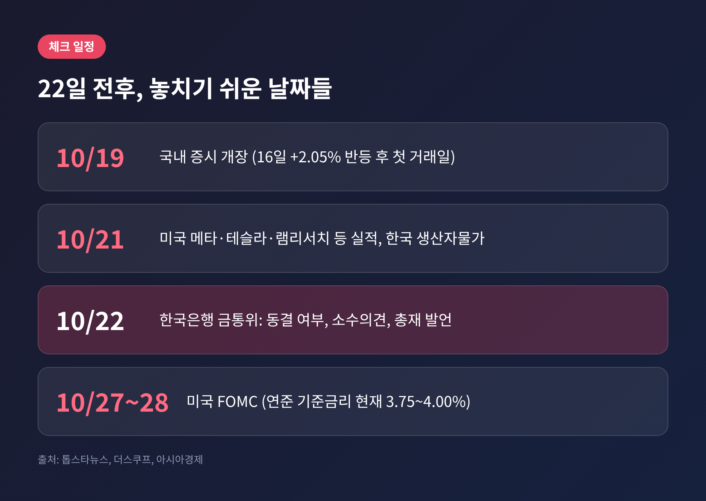

코스피 급락 원인과 금통위 선택지, 10월 22일 한국은행은 무엇을 고민하나

3줄 요약
- 10월 15일 코스피는 7.57% 급락한 5,554.22로 마감했습니다. 미국 물가 쇼크, AI 투자 수익성 의문, 외국인 매도가 한꺼번에 겹친 결과입니다.
- 22일 금통위에서는 기준금리 3.00% 동결이 사실상 컨센서스입니다. 다만 동결이 긴축의 끝은 아니라는 해석이 우세합니다.
- 관전 포인트는 결정 자체보다 소수의견 유무, 총재의 발언 수위, 그리고 27~28일 미국 FOMC입니다.
이번 글에서는 코스피 급락이 어떤 구조로 일어났는지 짚고, 이어지는 한국은행 금융통화위원회(금통위)의 선택지를 정리해 보겠습니다. 투자 판단이 아니라 상황을 이해하기 위한 해설입니다.
■ 무슨 일이 있었나 — 열흘 만에 7,000선에서 5,500선으로
예전엔 코스피 7,000선이 눈앞이었습니다. 지금은 5,500선입니다.
10월 2일 7,003.74였던 지수는 7거래일 연속 하락하며 약 20.7% 빠졌습니다(데이터솜). 15일 하루 낙폭은 454.59포인트, 7.57%였습니다. 종가는 5,554.22입니다.
장중 흐름은 더 거셌습니다. 오전 9시 7분 매도 사이드카가 발동됐고, 12시 38분에는 1단계 서킷브레이커가 걸렸습니다(뉴스핌). 이 시점 지수는 전일 대비 8.02% 내린 5,527.12였습니다. 서킷브레이커는 올해 코스피 기준 열 번째입니다(서울경제). 장중 저점은 5,450.81, 하락률로는 9.29%에 달했습니다.
종목별로는 삼성전자가 9.48% 내린 21만원, SK하이닉스가 11.06% 내린 약 126만원에 마감했습니다(중앙데일리). 두 종목이 코스피 시가총액 감소분의 약 59%, 금액으로 약 244조원을 차지했습니다(데이터솜). 평가액이 줄어든 것이지, 팔지 않은 투자자의 실현 손실은 아닙니다.

■ 왜 중요한가 — 하루 낙폭보다 ‘구조’가 문제입니다
16일 코스피는 2.05% 반등한 5,668.05로 마감했습니다. 그러나 전날 낙폭의 4분의 1 남짓만 되돌렸을 뿐입니다(세계일보). 이번 급락을 일회성 사고로만 보기 어려운 이유가 여기에 있습니다.
원인은 하나가 아니었습니다. 서로 다른 세 줄기가 같은 날 만났습니다.
첫째는 미국 물가입니다. 9월 소비자물가지수(CPI)는 전년 대비 3.7%로, 전망치 3.6%를 웃돌았습니다. 전월 대비 0.6%는 4월 이후 가장 큰 폭입니다. 에너지 물가가 전년 대비 35.3% 오른 영향이 컸습니다(헤럴드경제 미주판). 10월 금리 인상 확률은 하루 만에 22.1%에서 51.5%로 뛰었습니다(CME 페드워치 기준).
둘째는 AI 투자 수익성에 대한 의문입니다. AI 클라우드 기업 코어위브의 회사채 수익률이 15% 안팎까지 올랐고, 주가는 15.5% 내렸습니다(중앙데일리). 가트너는 2030년까지 AI 인프라 투자 3.5조 달러가 손상될 위험을 경고했습니다(서울경제). 금리가 높아지면 빚으로 투자를 키운 기업의 부담이 커집니다. 블룸버그가 ‘금리와 AI 자금조달 우려’를 급락의 배경으로 꼽은 이유입니다.
셋째는 중국 창신메모리(CXMT)의 메모리 공급 확대 우려입니다. 반도체 호황의 지속성에 의문이 더해졌습니다.

■ 배경과 쟁점 — 외국인은 팔고 개인은 담았습니다
수급을 보면 구조가 선명합니다. 15일 외국인은 코스피에서 약 3.6조원을 순매도했고, 8거래일 연속 매도세입니다. 이 가운데 삼성전자(약 1.46조원)와 SK하이닉스(약 1.11조원)가 약 71%입니다(세계일보·톱스타뉴스).
10월 누적으로 보면 규모가 더 큽니다. 집계 기준에 따라 17조~20조원대로 차이가 있지만, 파이낸셜뉴스 기준으로는 약 18조원이고 이 중 79%가 두 종목입니다. 반대편에서는 개인이 10월 1~14일 두 종목을 약 7조원 순매수했습니다. 9월에는 같은 두 종목을 약 18조원 순매도했던 개인입니다(세계일보).
외국인과 개인이 한 달 사이에 정반대 포지션을 맞바꾼 셈입니다.
한 가지는 짚어야 합니다. 외국인은 같은 날 코스피200 선물을 약 3,280억원 순매수했습니다. 현물 매도가 곧 한국 시장 이탈은 아니라는 해석이 있는 이유입니다(톱스타뉴스). 반면 지수가 두 종목에 쏠려 있어, 두 종목에서 매도가 나오면 시장 전체가 흔들리는 구조는 그대로입니다.
환율은 위기형이 아니었습니다. 15일 원·달러 환율은 1,344.6원으로 마감했고, 16일 주간 종가는 1,331.4원이었습니다. 주간 종가 기준으로는 2년 만의 최저 수준입니다(더스쿠프). 통화 가치가 무너지며 주식이 빠진 장면은 아니라는 뜻입니다.

■ 금통위의 선택지 — 동결은 유력, ‘쉼표’일 뿐입니다
이제 금통위입니다. 한국은행은 7월 16일 2.50%에서 2.75%로, 8월 27일 2.75%에서 3.00%로 두 번 연속 올렸습니다. 올해 성장률 전망을 3.3%로 올릴 만큼 수출이 강했기 때문입니다(코리아인베스트인사이츠, 아주경제).
이투데이가 급락 당일 조사한 전문가 10명은 전원 10월 동결을 예상했습니다. 이유는 연속 인상의 효과를 점검하려는 것입니다. 한 전문가는 “이미 백투백 인상을 단행한 데다 반도체 경기가 여전히 좋다”고 말했습니다. 질문으로 던져진 ‘3연속 인상’은 현재로선 소수 시나리오로 보는 편이 자연스럽습니다.
다만 동결이 인상 사이클의 끝이라는 뜻은 아닙니다. 신현송 총재는 13일 물가가 2%로 돌아간다는 확신이 들 때까지 긴축 기조를 이어가겠다는 취지로 말했습니다(파이낸셜포스트). 씨티는 이번 동결을 ‘매파적 동결’로 부르며 11월 0.25%p 인상을 내다봤고, 모건스탠리도 11월 인상을 전망합니다.
이 지점에서 의견이 갈립니다. 스탠다드차타드는 급락 이후인 16일 보고서에서 10월과 11월 모두 동결을 기본 시나리오로 제시했습니다. 코스피 급락이 이미 금융여건을 죄었다는 판단입니다. 다만 11월 인상 위험은 커졌다고 덧붙였습니다.

■ 금통위가 안고 있는 딜레마
금통위 입장에서는 저울이 양쪽으로 기웁니다.
인상 쪽 근거는 분명합니다. 9월 소비자물가 상승률은 2.9%로 8월 3.1%보다 내렸지만, 통신비 기저효과가 사라진 영향이 컸다는 설명입니다(아주경제). 근원물가와 서울 집값, 반도체 수출은 여전히 강한 편입니다.
속도 조절 쪽 근거도 있습니다. 증시 급락은 가계와 기업의 심리를 얼려 금융여건을 스스로 죄는 효과가 있습니다. 취약 차주의 부담도 무겁습니다. 저소득 자영업자 연체율은 2021년 1분기 0.67%에서 올해 1분기 2.13%로, 중소기업 연체율은 7월 0.856%로 10년 만의 최고치입니다(파이낸셜포스트).
한 분석에 따르면 0.25%p 인상은 변동금리 대출 1억원당 연 25만원 안팎의 이자 증가로 이어집니다. 작아 보여도 연체 위험 차주에게는 다른 이야기입니다. 반면 환율이 1,330원대로 안정적이어서, 환율 방어를 위해 서둘러 올릴 이유는 상대적으로 약합니다.
한계도 인정해야 합니다. 이런 해석은 전문가 전망을 종합한 것이며, 통화정책은 소수 위원의 판단과 총재의 발언 하나로도 방향이 달라질 수 있습니다.
■ 전망 — 22일 이후의 일정표를 보시길 권합니다
결정 자체는 예상 범위 안일 가능성이 큽니다. 그래서 시장은 세 가지를 볼 것입니다.
하나는 소수의견입니다. 씨티는 1명, 모건스탠리는 2명이 인상 의견을 낼 것으로 봅니다. 만장일치 동결이라면 완화적, 인상 소수의견이 나오면 11월 인상 신호로 읽힐 수 있습니다.
다른 하나는 총재의 말입니다. 증시 급락을 금융여건 요인으로 얼마나 비중 있게 언급하는지가 11월 경로를 가를 것입니다.
마지막은 미국입니다. 연준은 지난달 기준금리를 3.75~4.00%로 올렸고(아시아경제), FOMC는 27~28일 열립니다. 인상 확률은 보도마다 차이가 있어 30%대와 50%대가 함께 나옵니다. 금통위 이후 닷새 만에 한국은행의 결정 효과를 덮을 변수가 나오는 셈입니다.
그 사이 21일에는 메타·테슬라·램리서치 등 미국 기업 실적과 국내 생산자물가가 발표됩니다(톱스타뉴스). 반등이 기술적 되돌림인지 심리 회복인지는 아직 가려지지 않았다는 평가가 많습니다(더스쿠프).

정리하면 이렇습니다.
이번 급락은 금리, AI 투자, 수급이 한 점에서 만난 사건이었고, 금통위는 그 한복판에서 속도를 고르는 자리입니다. “동결은 쉼표이지 마침표가 아니다.” 이 한 문장이 22일의 핵심입니다.
숫자가 크게 움직이는 날일수록, 원인을 나눠서 보는 일이 차분함을 되찾는 첫걸음일 것입니다. 22일 이후의 문장 하나하나를 직접 확인해 보시길 권합니다.
본 글은 공개된 언론 보도를 정리한 정보 제공용 해설이며, 투자 권유가 아닙니다. 수치는 보도 시점과 집계 기준에 따라 다를 수 있고, 투자 판단과 책임은 본인에게 있습니다.
참고 보도: 중앙데일리, 서울경제, 뉴스핌, 데이터솜, 세계일보, 톱스타뉴스, 더스쿠프, 파이낸셜뉴스, 이투데이, 아주경제, 파이낸셜포스트, 헤럴드경제 미주판, 아시아경제, FXStreet, 블룸버그(헤드라인)